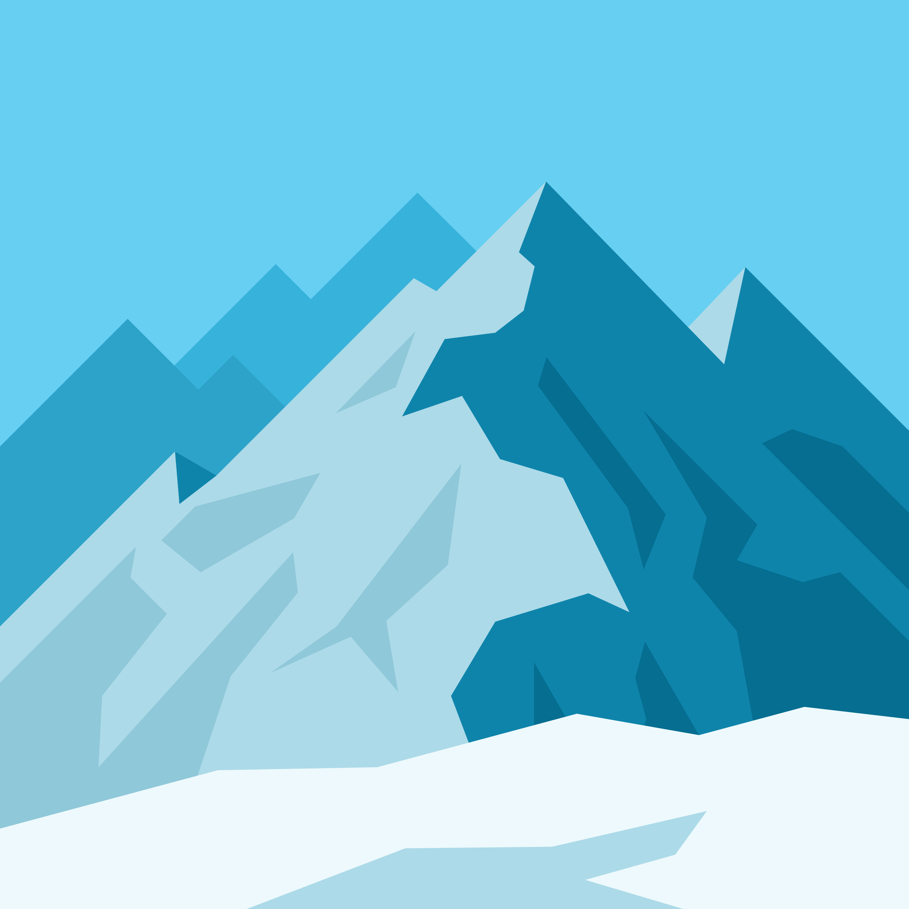
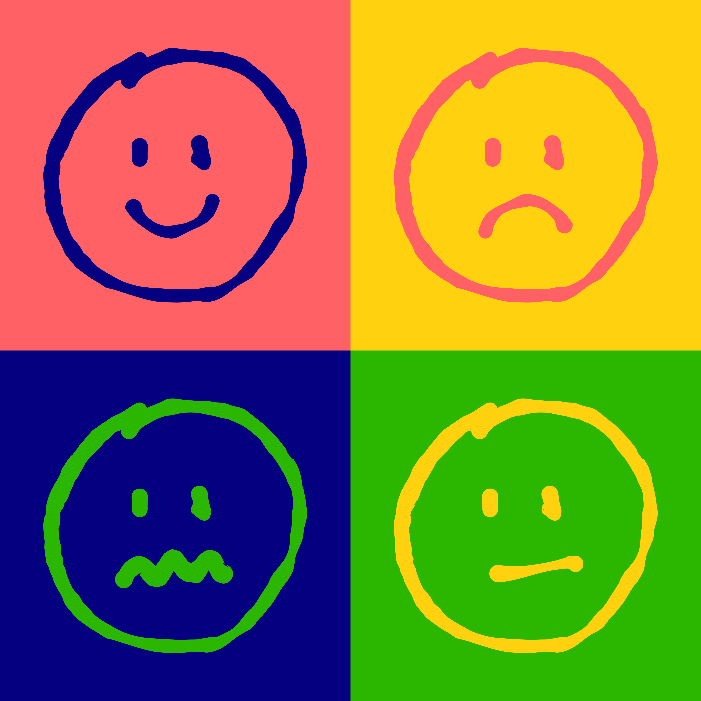
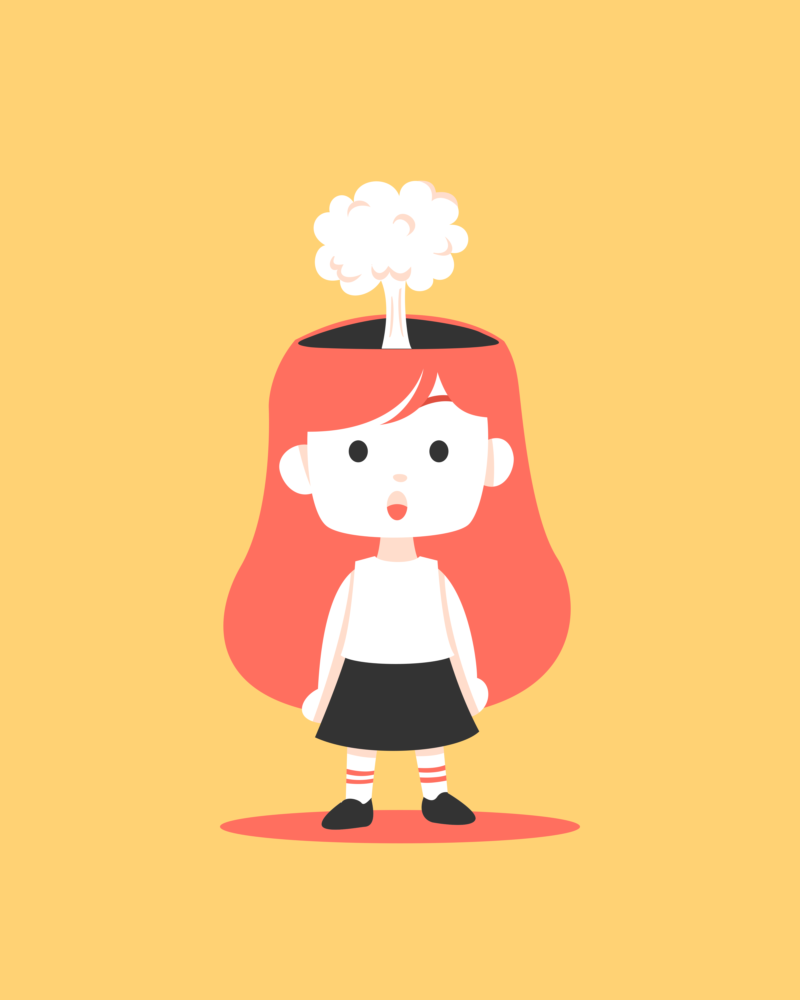
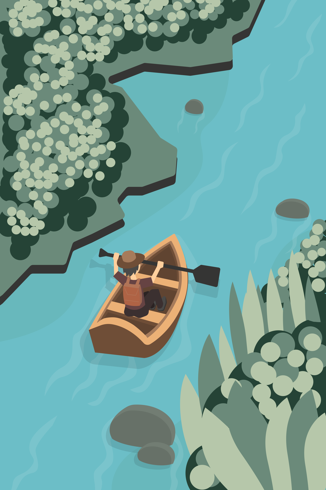
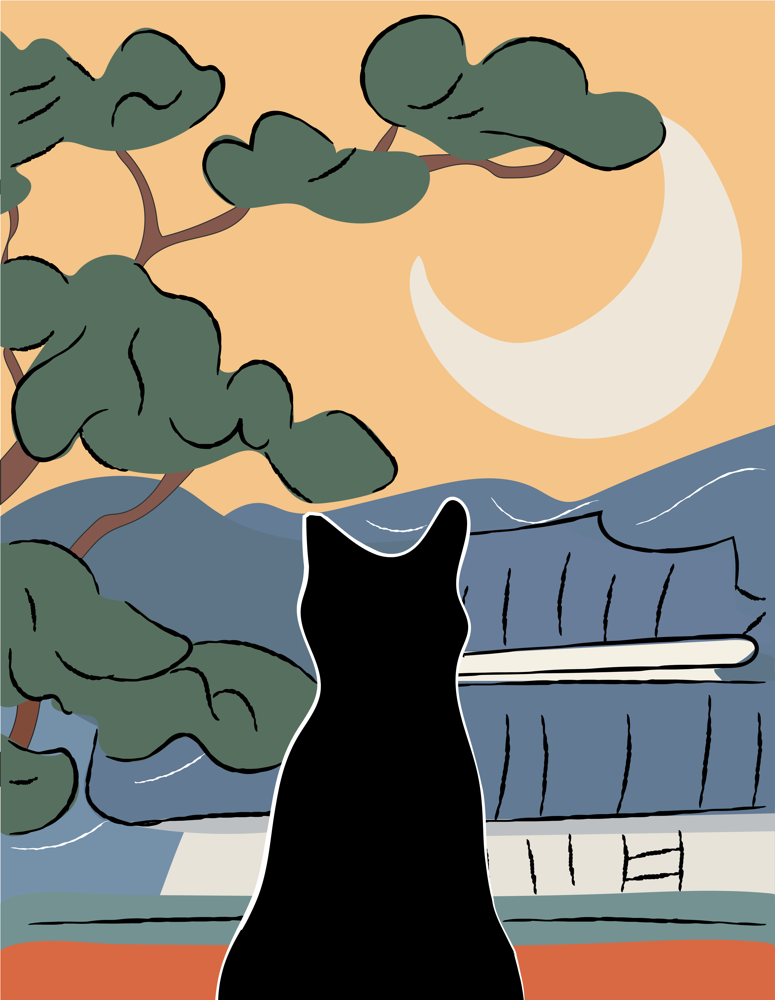
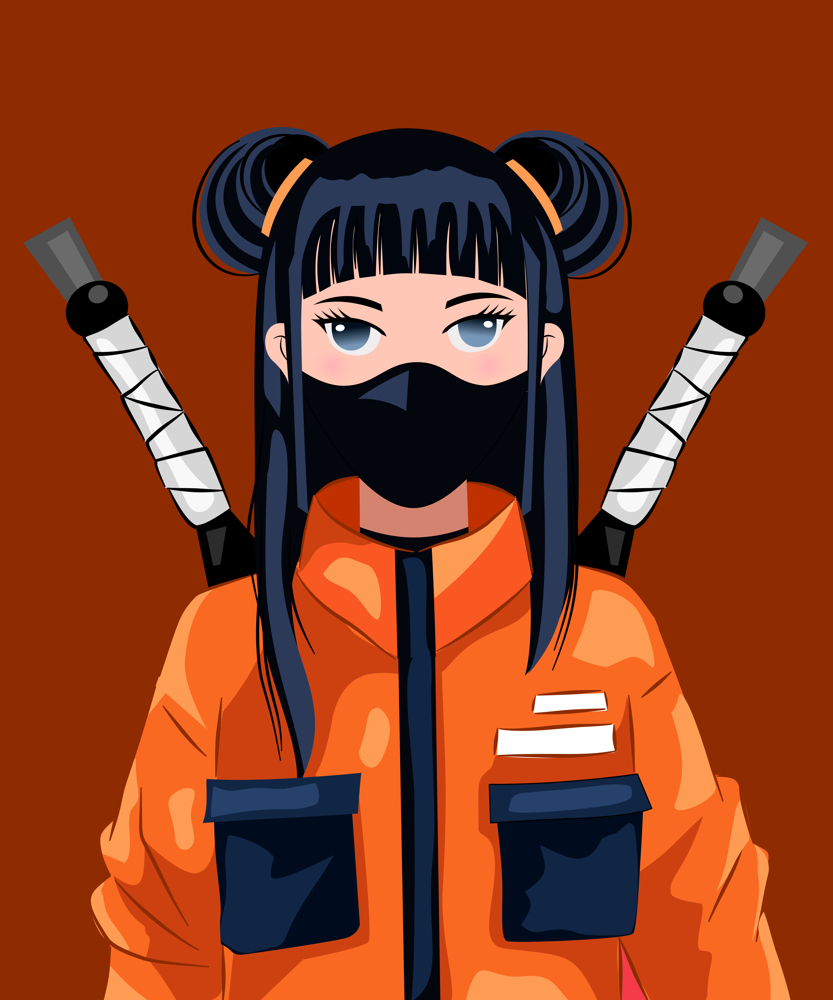
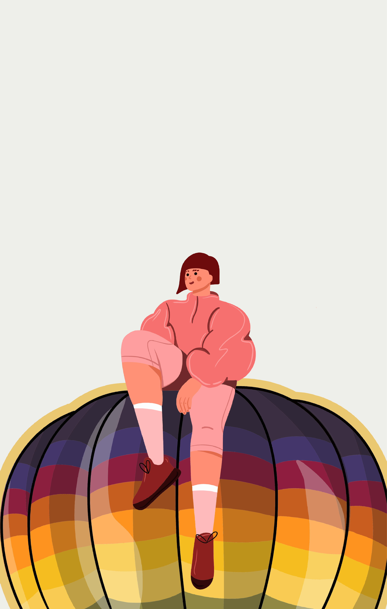

Это было самое начало пути. На этом этапе важно было проникнуться основами и настроиться на учёбу. И, возможно, подумать, как новые знания могут повлиять на ваше будущее.
Очень чесались руки скорей начать, и не верилось, что я все же решилась. Смесь предвкушения, страха и азарта.
1 спринт: Я — чистый лист
<туплю>

На первых этапах мы работали со страхами и сомнениями, которые часто испытывают новички. Один из них — страх перед чистым листом. Это, конечно же, намного сложнее, чем боязнь куска бумаги. Часто за этим ощущением скрываются более глубокие вопросы: с чего начать? а вдруг будет слишком сложно? что, если я не справлюсь?
Так и было: сидишь и смотришь на белый экран. И с чего начать?
1 спринт: А если не получится?
<мдаааа>

Первый проект — позади! Но это всё ещё самое начало пути. Радость могла быстро померкнуть и смениться ожиданием провала. Или вы, наоборот, могли вдохновиться успехами и поверить в себя.
Это были качели: Ю-ху! у меня получилось! Shit! Что я вообще тут делаю?!
2 спринт: Погоня за идеалом
<дышим и кодим>

На этом этапе вы уже достаточно разбирались в основах вёрстки, чтобы понять, как много ещё впереди. Вы могли попытаться погнаться за идеалом и понять, что он недостижим. А, может, вы вовсе и не подвержены перфекционизму и вместо того, чтобы сделать идеально, старались просто сделать.
Как же разобраться с этими флексами и гридами? С выравниванием? Это непостижимо.
2 спринт: О тех, кто рядом
<про себя>

Всё это время вы были не одиноки (хотя, возможно, иногда и чувствовали, что одни против целого мира). Вас окружали одногруппники, команда сопровождения и просто близкие люди, которым можно пожаловаться, если очередной макет просто так не поддавался. Осваивать что-то новое легче, когда рядом есть единомышленники, не правда ли?
Но как же тяжело не ощущать себя идиотом рядом с более продвинутыми одногруппниками. Особенно на воркшопах. Особенно, если попадешь в гурппу бывалых.
3 спринт: Обходные стратегии
<О прокрастинации>

На этом курсе вы постоянно решали разные задачи. В какой-то момент вам могло показаться, что решения просто иссякли. Значит, пришло время посмотреть на задачу под другим углом.
Третий спринт - это прокрастинация во всей своей красе. Максимум времени уходит, чтобы просто усадить себя за монитор. Но если только сядешь - все, обратно уже не выйти.
3 спринт: Когда опускаются руки
<собрались>

Во время учёбы часто возникает чувство, когда не знаешь, за что хвататься. Вроде и проектную пора сдавать, и задачи хочется порешать, и в теории получше разобраться, и жизнь не забыть пожить. В такие моменты очень нужна концентрация. Вспомните, откуда вы её черпали.
Сила воли, сила воли и еще раз сила воли. А про силу воли я уже говорила?
«Сейчас я здесь»
<было круто>

Сейчас вы уже очень много знаете о вёрстке. Но это только начало. Во-первых, впереди ещё много материала про «красотищу». Во-вторых, с окончанием курса учёба не заканчивается. Вёрстка — это целый мир. И этот мир постоянно меняется. Познать его полностью не получится, но это тот случай, когда важен сам процесс познания. Ведь часто путь — и есть результат.
Сейчас я с улыбкой вспоминаю самое начало: попытки вникнуть в материал, заучивание кода, муки с флексами и гридами. То что тогда казалось неподъемным, сейчас пройдено и понято. Впереди еще столько интересного. И главное, - с каждым спринтом мне становится все интереснее.